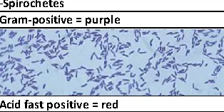
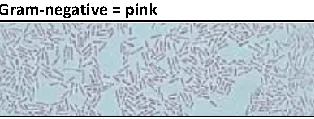
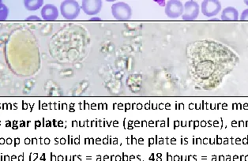
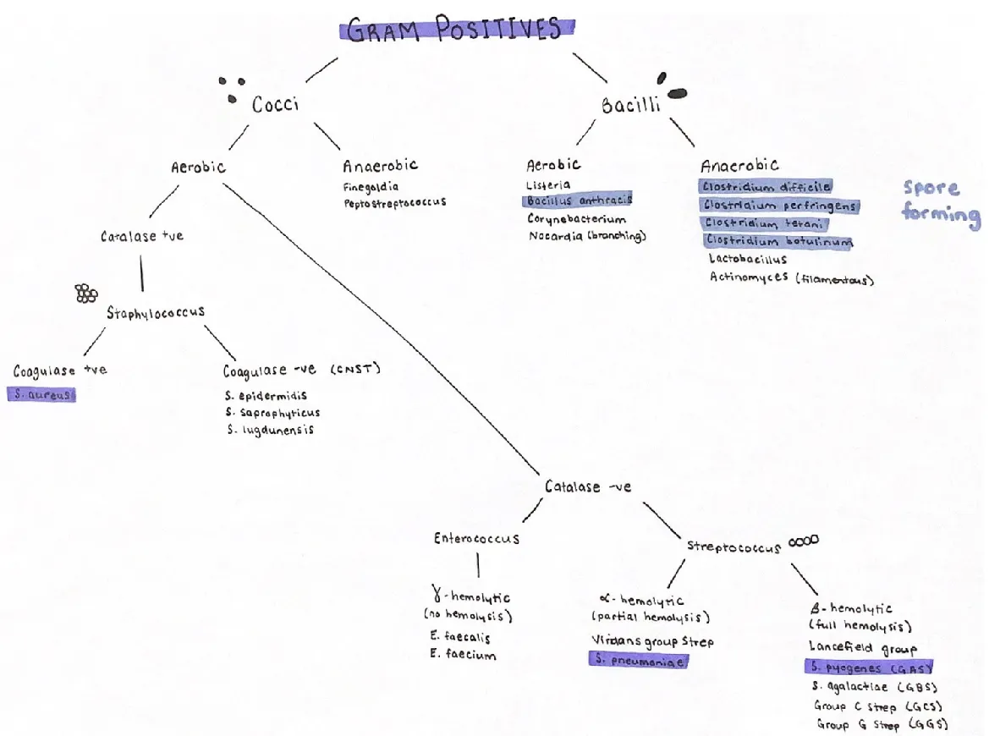
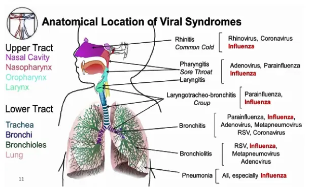
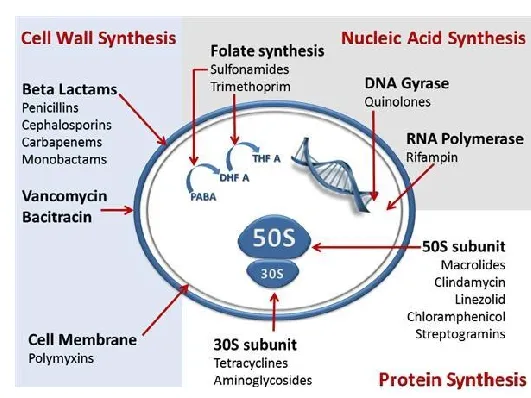
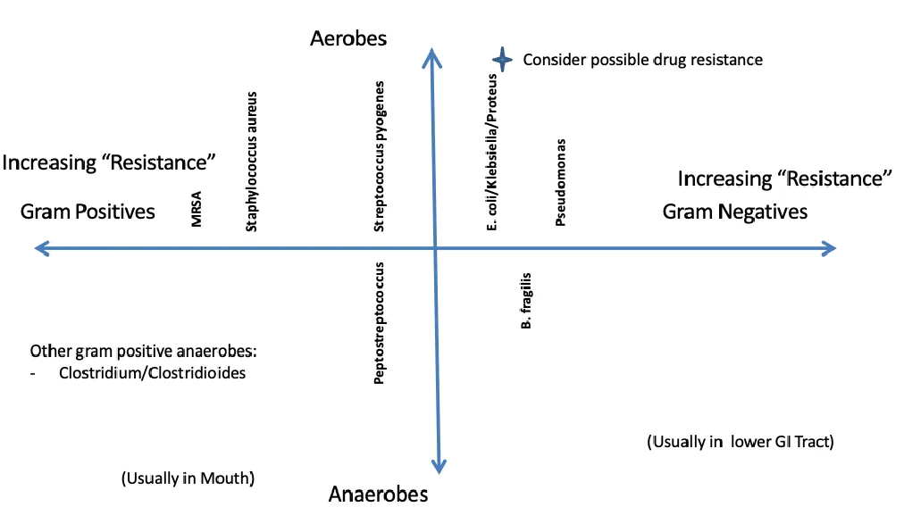
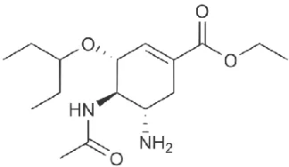
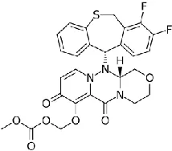

Week 13: Microbes, antimicrobials and infection control
Every topic from Nicole's Notes and the Week 13 lectures. Pick a topic, open a card, then test yourself with the quick recall at the end.
Lectures this week
- Utilizing the microbiology lab
- Interpreting micro tests
- Classification of microbes
- Understanding the human microbiome
- Antibiotics
- Antifungal and antiviral agents
- Basics of transmission
- Introduction to infection control
- Outbreak management
Micro lab
Key definitions
- Susceptibility testing: used to produce antimicrobial susceptibility profiles and detect resistance to therapeutic agents
- Breakpoint: minimal inhibitory concentration (MIC) or zone diameter value used to categorize S, SDD, I, R, NS
- Interpretive category: derived from microbiological characteristic, PK-PD parameters, and clinical outcome data
Microbiology Lab Nicole's Notes p. 119
- A laboratory devoted to the culturing, examination, and identification of microorganisms
- Team: medical microbiologist, manager, coordinator, laboratory technologists, laboratory assistance
- Sections: bacteriology, virology, mycology, parasitology, serology, molecular
- Role: diagnosis and treatment of infectious diseases, infection control, public health
Laboratory Test Information Guide (LTIG) Nicole's Notes p. 119
- Test purpose and limitations
- Patient selection criteria
- Timing of specimen collection
- Optimal specimen collection sites
- Approved specimen collection methods
- Specimen transport medium criteria/transport time/temperature
- Specimen holding instructions if it cannot be transported immediately
- Minimum acceptable volume
- Availability of test
- Turnaround time
- Result reporting procedures
Rejection Criteria Nicole's Notes p. 119
- Unlabeled/mislabeled/incompletely labeled specimens
- Quantity not sufficient for testing
- Use of an improper transport medium
- Use of improper swab
- Specimen inappropriately handled (temperature, timing, storage)
- Improper collection site for test requested
- Specimen leakage from transport container
Phases of Testing Nicole's Notes p. 119
| Phase of Testing | Tasks |
|---|---|
| Pre-analytic | Positive identification, patient preparation, sample collection, sample integrity |
| Analytic | Standardization, operator competence, analysis, quality assurance |
| Post-analytic | Result printing, interfacing, reporting, communicating |
Specimen Collection Nicole's Notes p. 119
- Should be from the site of infection
- Quantity sufficient for tests requested
- Collect BEFORE antibiotics are given
- Avoid contamination with normal flora
- Number of specimens
- Appropriate swabs/containers
- Always deliver to the laboratory ASAP
- Label specimens accurately – identifiers, clinical information
| Infection | Specimen | Collection Method | Comments |
|---|---|---|---|
| Bacteremia | Blood | Venipuncture | 2 specimens |
| Meningitis | CSF | Lumbar puncture | |
| Pneumonia | Sputum | Bronchoalveolar lavage (BAL), tracheal aspirate, nasopharyngeal swab (NPS) | Serology, Ag |
| Gastroenteritis | Stool | Culture, PCR, microscopy | |
| UTI | Urine | Suprapubic aspiration (cold standard), catheter, mid-stream | Cystoscopy |
| Wound | Tissue | Deep wound swab | Collection technique |
| Joints or any sterile site | Fluid, tissue |
Blood Culture Nicole's Notes p. 120
- Volume of blood collected is most critical
- Disinfect the venipuncture site
- Catheter-drawn blood cultures have a higher risk of contamination
- Do not submit catheter tips for culture without an accompanying blood culture obtained by venipuncture
CNS Infection Nicole's Notes p. 120
- Meningitis, encephalitis, focal infections of brain parenchyma, CNS shunt infections, subdural empyema, epidural abscess
- Routes of infection: hematogenous spread, direct spread from an infected site, anatomic defects in CNS structures, nerves
- Ix: culture, molecular (viral – enterovirus, herpesvirus), Ag detection (fungal – cryptococcus)
- Blood cultures should be obtained if meningitis is suspected
- Inform the microbiology laboratory if unusual organisms are suspected
- Collect 3-4 tubes of CSF by lumbar puncture and submit for bacterial culture and molecular testing
- Collect as much sample as possible
Respiratory Infection Nicole's Notes p. 120
- Mechanisms of infection: aspiration, inhalation (aerosols, mycobacterium, TB), hematologic seeding
- Specimen types: sputum, tracheal aspirate, blood culture, urine, serum, bronchial, pleural fluid, biopsy
- Ix: clinical (signs and symptoms), radiographic features (consolidation), microbiology (culture, molecular, Ag detection, serology)
| Common Pathogens | |
|---|---|
| Bacterial | S. pneumoniae, S. aureus, Haemophilus influenzae, Mycoplasma pneumoniae |
| Viral | Influenza A, Influenza B, RSV Adenovirus, Metapneumovirus, Enterovirus, Parainfluenza 1/2/3/4 Rhinovirus, Bocavirus, Coronavirus |
| Fungal | Histoplasma capsulatum, Coccidioides immitis, Cryptococcus neoformans, Aspergillus |
| Community Acquired Pneumonia | Hospital Acquired Pneumonia | |
|---|---|---|
| Presentation | Cough, fever CXR infiltrate | Cough, fever, CXR infiltrate Variable clinical features |
| Risk | Age, comorbidities (pulmonary, cardiac, liver disease), preceding influenza, alcohol abuse, immunosuppression (HIV, steroids) | ICU admission, mechanical ventilation, aspiration risk (dysphagia), microbial colonization, increased gastric pH, immunosuppression, poor glycemic control |
| Organisms | Common pathogens | Gram-negative organisms |
Gastroenteritis Nicole's Notes p. 120
- Ix: culture (bacterial), PCR (viral), ova and parasite test, Clostridium difficile test
| Common Pathogens | |
|---|---|
| Bacterial | Salmonella, Shigella, Yersinia, Campylobacter, E. coli O157, C. difficile |
| Viral | Norovirus, Rotavirus, Adenovirus |
| Fungal | Giardia, cryptosporidium |
Skin and Soft Tissue Infections (SSTIs) Nicole's Notes p. 120
- Primary cutaneous infections: cellulitis, ecthyma, impetigo, folliculitis, furunculosis, erysipelas
- Do not use the label “wound” alone
- The specimen of choice is a biopsied sample of the advancing margin of the lesion
- Do not ask the laboratory to report everything that grows
Antimicrobial Susceptibility Nicole's Notes p. 120
- Susceptibility testing: used to produce antimicrobial susceptibility profiles and detect resistance to therapeutic agents
- Standardization: optimizes bacterial growth, optimizes conditions, maintains reproducibility
- Breakpoint: minimal inhibitory concentration (MIC) or zone diameter value used to categorize S, SDD, I, R, NS
- Interpretive category: derived from microbiological characteristic, PK-PD parameters, and clinical outcome data
| Category | MIC | Zone | |
|---|---|---|---|
| Susceptible | Isolates are inhibited by the usually achievable concentrations of antimicrobial agent when the recommended dosage is used for the site of infection | ≤ 4 | ≥ 20 |
| Intermediate | Isolates with antimicrobial agent MICs that approach usually attainable blood and tissue levels and for which response rates may be lower than for susceptible isolates; implies clinical efficacy in body sites where the drugs are physiologically concentrated or when a higher-than-normal dosage of a drug can be used | 8-16 | 15-19 |
| Resistant | Isolates are not inhibited by the usually achievable concentrations of the agent with normal dosage schedules | ≥ 32 | ≤ 14 |
Quick recall
Answer in your head, then check.
Before antibiotics are given.
The volume of blood collected.
A biopsy of the advancing margin of the lesion.
Susceptible.
Diagnostics
Key definitions
- Bacteria: prokaryotic cells that divide asexually by binary fission
Microbiology Diagnostic Methods Nicole's Notes p. 121
| Diagnostic Test | Principles | |||||||
|---|---|---|---|---|---|---|---|---|
| Direct (presence) | Microscopy | The use of a microscope to magnify objects too small to be visualized with the naked eye -Characterization of organisms that have been cultivated in the laboratory - Light microscopy, fluorescence microscopy, dark field, electron microscopes -Rapid preliminary/final organism identification, detection of different organisms present in the same specimen, detection of organisms not easily cultivated in the laboratory, evaluation of patient specimens, determination of an organism’s clinical significance, provide preculture information, determine which tests and methods should be used | ||||||
| Gram stain (bacteria) -Primary stain: crystal violet -Mordant: Gram’s iodine -Decolorizer: alcohol/acetone -Counter stain: safranin | - Cocci: staphylococci (clusters), streptococci (chains), diplococci, tetrads - Bacilli: diplobacilli, streptobacilli (chains), coccobacilli, fusiform bacilli (pointed ends) - Spirochetes | |||||||
| Gram-positive = purple | Gram-negative = pink | |||||||
| Acid fast stain (mycobacteria, corynebacteria) -Primary stain: red carbol fuchsin -Decolorizer: acid alcohol -Counter stain: methylene blue/malachite green | Acid fast positive = red | Acid fast negative = blue | ||||||
| Ziehl-Neelsen stain | ||||||||
| Fluorescence stain | Auramine-Rhodamine – acid fast bacilli Calcofluor White – fungi | |||||||
| KOH (fungi) | ||||||||
| Giemsa stain (parasites) | ||||||||
| Wet preparation (no staining) | ||||||||
| Culture | A method of multiplying microorganisms by letting them reproduce in culture medium under controlled laboratory conditions -Growth media: liquid = broth, solid = agar plate; nutritive (general purpose), enrichment, selective, differential -Specimen is streaked using a sterile loop onto solid media, the plate is incubated at the appropriate temperature (35 ° C) and atmosphere (5% CO), and then examined (24 hours = aerobes, 48 hours = anaerobes) 2 -Shape: punctiform (pinpoint), circular, filamentous, irregular, rhizoid, curled -Elevation: flat, raised, convex, umbonate, umbilicate, growth into media -Margin: entire (smooth), irregular, filamentous -Identification methods: phenotypic, molecular, matrix-assisted laser desorption/ionization-time of flight mass spectrometry Antimicrobial susceptibility testing: the procedures used to produce antimicrobial susceptibility profiles and detect resistance to therapeutic agents | |||||||
| Molecular | Direct manipulation and analysis of nucleic acid sequency – amplification, non-amplification Polymerase chain reaction (PCR) – denature (95 ° C), anneal (68 ° C), elongate (72 ° C) -Applications: 1 or 2 pathogens cause the majority of infections, no further characterization is required, no reliable/suboptimal diagnostic methods, reliable diagnostic methods exist but are slow, quantitation of infectious agent burden -Advantages: detect organisms that are nonviable, cannot be grown in culture, extremely difficult to grow, slow growing, previously unknown; quantitate infectious agent burden in patient specimens -Disadvantages: detects only primer-targeted organisms, no cultured organism is available if subsequent characterization beyond identification is necessary, false negatives, no differentiation between colonization vs. infection | |||||||
| Antigen detection | Direct detection of microorganisms in patient specimens using immunochemical methods Enzyme-linked immunoassay (ELISA) | |||||||
| Indirect (antibody) | Serology | Detection of the presence of antibodies to a particular infectious agent -Interpretation: change in antibody (acute and convalescent sera), fourfold rise in titer, cross-reacting antibodies | ||||||
| IgM: single acute sera | IgG: acute and convalescent sera | Interpretation | ||||||
| Collect at the onset of illness | Collect 2-6 weeks after onset | |||||||
| – | + | Immunity | ||||||
| + | + | Acute/recent infection | ||||||
| + | – | Acute/recent infection or non-specific reaction |





Bacteria à acute and chronic infections
- Bacteria: prokaryotic cells that divide asexually by binary fission
| Gram-Positive | Gram-Negative | |
|---|---|---|
| Peptidoglycan | Thick layer on surface of bacteria | Thin layer between inner and outer membrane |
| Membrane | Phospholipid bilayer membrane | Inner and outer membrane |
| Accessory proteins | Cell-surface proteins anchored to peptidoglycan | Porin proteins in outer membrane control permeability |
| Endotoxins | Lipoteichoic acid Engages TLR2 | Lipopolysaccharide (outer membrane) Engages TLR4 |
| Clinical significance | Thick outer membrane makes it resistant to penicillin |
- Peptidoglycan is comprised of N-acetyl glucosamine (GlcNac) and N-acetyl muramic acid (MurNac)
- MurNac has a pentapeptide – crosslinking occurs between the D-Ala in one strand and Lysine (gram-positive) or mDap (gram- negative) in an adjacent strand to provide structural rigidity to the cell wall
| Gram-Positive | Gram-Negative | Not Seen on Gram Stain | ||||||||
|---|---|---|---|---|---|---|---|---|---|---|
| Cocci | Bacilli | Cocci | Bacilli | |||||||
| Aerobes | Staphylococcus S. aureus S. epidermidis S. saprophyticus S. lugdunensis Streptococcus S. pneumoniae S. pyogenes (GAS) S. agalactiae (GBS) Enterococcus E. faecalis E. faecium | Listeria B. anthracis (spore) Corynebacterium Nocardia (branching) | Neisseria N. gonorrhoeae N. meningitidis Moraxella | Vibrio cholerae Bordetella pertussis Campylobacter Escherichia coli Klebsiella pneumoniae Enterobacter Citrobacter Pseudomonas Salmonella typhi Shigella dysenteriae Yersinia pestis Haemophilus influenzae Legionella pneumophila Proteus Enterobacter | ||||||
| Anaerobes | Finegoldia Peptostreptococcus | Clostridium C. difficile C. perfringens C. tetani C. botulinum Lactobacillus Actinomyces (filamentous) Propionibacterium | Bacteroides fragilis Fusobacterium Porphyromonas Prevotella | Obligate intracellular | ||||||
| Rickettsia rickettsii Chlamydia trachomatis Coxiella burnetii | ||||||||||
| No cell wall | ||||||||||
| Mycoplasma | ||||||||||
| Spirochaete | ||||||||||
| Treponema pallidum Borrelia burgdorferi Leptospirosis Helicobacter pylori` |
Quick recall
Answer in your head, then check.
Gram-positive purple, gram-negative pink.
Red. Acid-fast negative is blue.
IgM needs a single acute serum. IgG needs acute and convalescent sera.
Their thick outer membrane.
Bacteria
Key definitions
- Spore: a unit of sexual or asexual reproduction that may be adapted for dispersal and for survival, often for extended periods of time, in unfavourable conditions; metabolically inactive; hard to destroy
- Viruses: infectious, obligate intracellular parasites composed of DNA or RNA surrounded by a protein coat and/or membrane
- Virions: mature virus particles that can be released into the extracellular environment
- Capsid: protein shell that encases the genome, held together by non-covalent interactions; capsid + genome = nucleocapsid
- Enveloped viruses: have an outer lipid bilayer, acquired by the budding of nucleocapsid through the host cell’s cytoplasmic membrane; glycoproteins are expressed on the surface of the envelope
- Naked viruses: have no envelope and are often more resistant to harsh conditions
- Fungi: eukaryotic organisms
- Parasite: an organism that lives in or on a host organism and gets its food from or at the expense of its host
- Prions: misfolded proteins with the ability to transmit their misfolded shape onto normal variants of the same protein
Important Gram-Positive Cocci Nicole's Notes p. 122
- Staphylococcus aureus and Group A Streptococcus (GAS) commonly cause soft tissue infections
| Staphylococcus aureus | Streptococcus pyogenes | |
|---|---|---|
| Classification | Gram-positive cocci in clusters, aerobic Catalase +ve, coagulase +ve | Gram-positive cocci in pairs and chains, aerobic Catalase –ve, 𝛽 -hemolytic |
| Diseases caused | Skin and soft tissue infections: cellulitis, abscess Invasive: bacteremia, endocarditis, surgical site infections, septic arthritis, vertebral osteomyelitis/discitis | Non-invasive: pharyngitis (Strep throat), cellulitis Invasive: bacteremia, TSS, necrotizing fasciitis, endometritis Post-infectious syndromes: rheumatic fever (rheumatic heart disease), post-streptococcal glomerulonephritis |
| Transmission | Contact | Droplet/contact |
| Colonizes | Nares, axilla, groin (skin folds) – loves to form biofilms | Nasopharynx |
| Virulence factors (manipulation of fibrinogen) | Coagulase: secreted protein that binds and activates prothrombin Clumping factors (ClfA, ClfB): cell surface proteins that bind fibrinogen, which causes cells to clump Coagulase and clumping factors contribute to growth of platelet- fibrin vegetation heart valve (platelet activation and adhesion in fibrin matrix), which can break off and cause renal infarction | M-protein: multifunctional cell surface protein that binds fibrinogen, IgG, and complement regulatory proteins M-protein defective strains are susceptible to phagocytosis With recurrent infection, antibodies specific to M-protein (α -helical coiled-coil structure) may develop cross-reactivity to heart tissue tropomyosin and promote auto-immune rheumatic fever |
| Adhesion proteins | Fibronectin, fibrinogen | Fibronectin, fibrinogen |
| Hemolysis (RBC) | Alpha-hemolysin | Streptolysin O |
| Immune evasion | Protein A binds IgG in an orientation that is not favourable to promote phagocytosis Chemotaxis Inhibitory Protein Chip binds chemotaxis receptors on leukocytes, so they cannot follow a chemokine gradient | M-protein: IgG, Factor H Cell envelope protease SpyCEP degrades chemokines, which impairs neutrophil recruitment to the site of infection |
Clostridial Species Nicole's Notes p. 123
- Gram-positive bacilli, anaerobic, spore forming, +/– toxin-producing
- Spore: a unit of sexual or asexual reproduction that may be adapted for dispersal and for survival, often for extended periods of time, in unfavourable conditions; metabolically inactive; hard to destroy
- Ix: nucleic acid amplification test (C. difficile toxin gene), ELISA (C. difficile common antigen, C. difficile toxin); difficult to culture
| Clostridial Species | Diseases Caused |
|---|---|
| Clostridium difficile | Diarrhea; pseudomembranous colitis Large clostridial toxins TcdA and TcdB: enter epithelial cells to cause inflammatory cytokine (IL1-β) and chemokine production, influx of neutrophils, disruption of tight junctions, fluid secretion, and cell death (TcdB is most potent) CDTb binds to epithelial receptor and is endocytosed; CDTb oligomerizes and forms a pore CDTa is translocated through the pore and enters the cytoplasm as the endosome acidifies (vacuolar ATPase); CDTa ribosylates actin, leading to complete destruction of the cellular actin cytoskeleton, loss of cell shape and tight junctions, and cell death |
| Clostridium perfringens | Gangrene: blood flow to a large area of tissue is cut off, causing the tissue to break down and die (greenish-black color) |
| Clostridium tetani | Tetanus – trismus (lock jaw), risus sardonicus (Sardinian grin), opisthotonos (backward arching) Inhibits the release of GABA/glycine; uncontrolled release of neurotransmitter = muscle contractions/spasms |
| Clostridium botulinum | Infant botulism (flaccid paralysis) – gut colonisation, honey contaminated by spores, environmental dust/soil containing spores Foodborne botulism – self-canned products, prison brew (pruno, hooch, moonshine, bootleg) Wound botulism Iatrogenic botulism Inhibits acetylcholine release = no muscle contraction |
| Clostridium septicum | Gangrene, sepsis, soft tissue infections |
| Clostridium sordelli | TSS, gynecological infections, soft tissue infections |
Important Gram Negatives Nicole's Notes p. 123
| Escherichia coli | |
|---|---|
| Classification | Gram-negative bacilli, aerobic Growth on sheep blood agar, oxidase –ve |
| Diseases caused | UTI Pyelonephritis: PapG adhesion binds to a galactose containing glycolipid in the upper urinary tract and kidney – promotes tissue tropism Cystitis: FimH adhesion at the tip of the pilus structure promotes adhesion to the mucosal surface of the bladder Colitis Bacteremia Sepsis |
| Transmission | Contact, contaminated food/water |
| Colonizes | Gut microbiome |
| Virulence factors | Adhesion: fimbrilae Pyelonephritis = glycolipids Cystitis = mannose |
| Immune evasion | The O-polysaccharide component of gram-negative LPS can prevent assembly of complement membrane attack complex E. coli K12 capsule contains sialic acid which prevents complement activation Uropathogenic E. coli (K1) produce sialic acid capsule (mimicry) |
| Shiga toxin- producing E. coli (STEC) E. Coli O157:H7 | Adhesion protein intimin is secreted into the membrane of intestinal epithelial cells (Tir) and forms an actin pedestal structure from which the bacteria secrete Shiga toxin (B subunit pentamer + A subunit toxin component) The B subunit binds to globotriaosylceramide (Gb3) on the epithelial membrane and the toxin is internalized through endocytosis The vesicle enclosed toxin undergoes retrograde transport through the Golgi apparatus to the endoplasmic reticulum, where the toxin component is shed from the vesicle, and glycosylates ribosomal RNA, leading to inhibition of protein synthesis and cell death |
- Salmonella, Shigella, and Yersinia cause colitis by injecting proteins into intestinal epithelial cells; some of these promote uptake through a ruffling mechanism, and others promote inflammation (IL-1 β production)
Mycobacteria à chronic infections
- Mycobacteria / acid-fast bacilli (AFB): high mycolic acid content in cell wall – technically gram-positive bacteria
- o “Acid fast” as washout phase with acid-alcohol is ineffective
- Ix: mycobacterial cultures (stain, culture, susceptibility); molecular (mycobacterial PCR); lateral flow assay
| Mycobacterium Tuberculosis Complex | Non-Tuberculous Mycobacteria (NTM) | ||
|---|---|---|---|
| M. tuberculosis M. bovis | Rapid growers (5-7 days) M. abscessus M. fortuitum M. smegmatis | Slow growers Mycobacterium avium complex M. avium M. intracellulare M. kansasii M. marinum M. gordonae | M. leprae |


Viruses à acute and chronic infections
- Viruses: infectious, obligate intracellular parasites composed of DNA or RNA surrounded by a protein coat and/or membrane
- Virions: mature virus particles that can be released into the extracellular environment
- Capsid: protein shell that encases the genome, held together by non-covalent interactions; capsid + genome = nucleocapsid
- Enveloped viruses: have an outer lipid bilayer, acquired by the budding of nucleocapsid through the host cell’s cytoplasmic membrane; glycoproteins are expressed on the surface of the envelope
- Naked viruses: have no envelope and are often more resistant to harsh conditions
- Virus morphology: helical, icosahedral (hollow, symmetrical, quasi-spherical), complex (non-symmetrical)
- Virion components: polymerases, proteases, integrases topoisomerases, capping enzymes, proteins, lipids
- The genome is the key unit that defines the virus
- o Gene products and regulatory signals for replication, assembly and packaging, regulation and timing of the replication cycle, modulation of host defenses, and spread to other cells and host is encoded in the viral genome
- mRNA is always the (+) strand
- DNA of equivalent polarity is also the (+) strand
- Compliments of (+) strands are negative (–) strands
- Virus replication cycle 1. Attachment to cell receptors 2. Entry – penetration into the cytoplasm 3. Uncoating – genome and other contents released from nucleocapsid 4. Protein synthesis – translation of viral mRNA 5. Genome replication – new copies of genome 6. Assembly of new virions 7. Release of new virus from the cell – off to infect a new cell
| Baltimore System of Virus Classification | |||||||||
| Nucleic Acid | Enveloped | Virus Family | Common Viruses | Medical Importance | |||||
| ds DNA virus | No | Adenoviridae | Adenovirus | URTI, conjunctivitis, gastroenteritis | |||||
| No | Papillomaviridae | HPV1,4 HPV6,11 HPV16,18 | Plantar warts Genital warts Cervical/anal dysplasia and cancer | ||||||
| No | Polyomaviridae | JC virus BK virus | Progressive multifocal leukoencephalopathy (PML) Nephropathy in renal transplant | ||||||
| Yes | Herpesviridae | HHV1 = HSV1 HHV2 = HSV2 HHV3 = VZV HHV4 = EBV HHV5 = CMV HHV6 HHV 8 = KSHV | Oral, ocular, and genital herpes; encephalitis Genital, oral, and ocular herpes; encephalitis Chickenpox, shingles Mononucleosis, viral hepatitis Retinitis, pneumonitis, hepatitis, encephalitis Roseola Kaposi’s sarcoma, multicentric Castleman’s disease, body cavity lymphoma | ||||||
| Yes | Poxviridae | Variola | Smallpox | ||||||
| ss DNA virus | No | Parvoviridae | Parvovirus B19 | Erythema infectiosum (Fifth disease) | |||||
| ds DNA retrovirus | Yes | Hepadnaviridae | Hepatitis B | Hepatitis | |||||
| ds RNA virus | No | Reoviridae | Rotavirus | Gastroenteritis | |||||
| (+) ss RNA virus | No | Caliciviridae | Norovirus | Gastroenteritis | |||||
| No | Picornaviridae | Poliovirus Echovirus Rhinovirus Coxsackie virus Hepatitis A | Poliomyelitis URTI, viral meningitis URTI (common cold) Hand-foot-and-mouth (dehydration), viral meningitis, myocarditis Acute hepatitis | ||||||
| Yes | Coronaviridae | Coronavirus | SARS COV-2, SARS COV-1, MERS, URTI | ||||||
| Yes | Flaviviridae | Yellow fever Dengue fever Hepatitis C virus West Nile Zika | Yellow fever Dengue fever Hepatitis Encephalitis, flaccid paralysis Zika virus disease | ||||||
| Yes | Togaviridae | Rubella | Rubella (German measles) | ||||||
| (–) ss RNA virus | Yes | Arenaviridae | Lassa | Lassa fever | |||||
| Yes | Filoviridae | Ebola, Marburg | Hemorrhagic fever | ||||||
| Yes | Orthomyxoviridae | Influenza A, B, C | Influenza | ||||||
| Yes | Paramyxoviridae | Measles Mumps Parainfluenza RSV | Measles Mumps URTI, croup, bronchiolitis Bronchiolitis, pneumonia | ||||||
| Yes | Rhabdoviridae | Rabies | Rabies | ||||||
| (+) ss RNA retrovirus | Yes | Retroviridae | HIV HTLV-1 | AIDS T-cell leukemia and lymphoma |
Fungi à superficial infections
- Fungi: eukaryotic organisms
- Cell wall = mannoproteins, 𝜷 -1,3-glucan, 𝜷 -1,6-glucan, chitin; cell membrane = ergosterol
- Ix: superficial infections = visual assessment, skin scrapings; invasive/deep infections = fungal culture, immunoassay
| Yeasts | Thermally Dimorphic | Moulds |
|---|---|---|
| Unicellular, reproduce by budding | Mould (room temp); yeast-like (body temp) | Multicellular with hyphae |
| Candida Cryptococcus – opportunistic infection Malassezia furfur – pityriasis versicolor (derm) | Histoplasma – histoplasmosis Blastomyces – blastomycosis Coccidioides – Valley fever Paracoccidioides Talaromyces (penicillium) | Aspergillus – opportunistic infection Mucormycetes – mucormycosis (scary-bad) Dermatophytes – athlete’s foot Trichophyton Microsporum Epidermophyton |
à
Parasites varied disease
- Parasite: an organism that lives in or on a host organism and gets its food from or at the expense of its host
- Ix: microscopy (thick/thin smears, stool ova and parasite test), molecular (malaria PCR), antigen detection (BinaxNOW malaria); cultures generally not an option
| Protozoa | Helminths (multicellular) | Ectoparasites | |||||||
|---|---|---|---|---|---|---|---|---|---|
| (unicellular) | Nematodes (round worms) | Trematodes (flukes) | Cestodes (flat/tape worms) | (multicellular) | |||||
| Plasmodium – malaria P. falciparum P. ovale Cyclospora Flagellates Giardia – Beaver Fever Leishmania Trichomonas Sarcodina entamoeba histolytica | Ascaris Ancylostoma – hookworm Necator – hookworm Trichuris – whipworm Strongyloides Tissue filariasis | Schistosoma haematobium Schistosoma mansoni Schistosoma japonicum | Echinococcus Taenia solium | Sarcoptes scabiei – scabies Pediculus – lice Myiasis |
Prions = NOT A MICROBE
- Prions: misfolded proteins with the ability to transmit their misfolded shape onto normal variants of the same protein
- Bovine spongiform encephalopathy (BSE) – cattle
- Chronic wasting disease (CWD) – deer, elk, moose
- Creutzfeldt-Jakob Disease
Quick recall
Answer in your head, then check.
Lipopolysaccharide (gram-negative) engages TLR4. Lipoteichoic acid (gram-positive) engages TLR2.
PapG binds glycolipids in pyelonephritis. FimH binds mannose in cystitis.
The capsid plus the genome.
Viruses and fungi
Common Respiratory Viruses Nicole's Notes p. 135
| SARS-CoV-2 | Influenza | RSV | |
|---|---|---|---|
| Virus type | (+) ss RNA virus Coronaviridae family | (–) ss RNA virus Orthomyxovirus family | (–) ss RNA virus Paramyxovirus family |
| Incubation period | 4-5 days (up to 14 days) | 2 days (1-4 days) | 4-6 days |
| Infectious period | 2-3 days pre-symptoms Up to 10 days post-symptoms | 1 day pre-symptoms 5-6 days post-symptoms | 3-8 days |
| Generation time | 4 days | 2-4 days | 7 days |
| Effective reproductive # | 1.5-4 secondary cases per infectious case | 1 secondary case per infectious case | 3-8 secondary cases per infectious case |
| Total cases | Canada: > 1.6 million | Canada 2019-20: 42514 Canada 2021-21: < 100 – masks | |
| Mortality | USA: > 690000 Canada: 27751 | USA 2018-19: 34200 Canada: 500-1500/year | USA: 14000 adult, 500-1000 children <5 |
| Transmission | Large droplets Small particle aerosols Contact/surfaces (less so) | Large droplets (> 5 microns) Small particle aerosols Contact/surfaces | Large droplets Contact/surfaces |
| Binds host receptor | ACE2 receptor (lines respiratory tract) SARS2 binds with higher affinity than SARS1 | Sialic acid (lines respiratory tract) | Nucleolin Insulin-like growth factor 1 receptor |
| URT | Nasal ciliated epithelial cells | Ciliated epithelial cells throughout | Upper airway epithelial cells |
| LRT | Bronchial ciliated epithelial cells Type 1 and 2 alveolar pneumocytes | Ciliated epithelial cells throughout | Bronchial ciliated epithelial cells Type 1 and 2 alveolar pneumocytes |
| Symptom onset | Mild Fever, cough, diarrhea, anosmia, conjunctivitis Dyspnea develops over 5-7 days | Acute | URTI symptoms, loss of appetite Symptoms peak at day 5 of illness Lingering cough – recovery of ciliated cells |
| Multisystem symptoms | Respiratory failure – ARDS GI illness – nausea, diarrhea Cardiac – acute cardiac injury, arrhythmias VTE – stroke, DVT, PE Cytokine storm (Kawasaki-like disease) Neurologic: anosmia, headaches | Primary pneumonia Superimposed bacterial pneumonia Cardiac – acute heart failure, acute ischemic heart disease (myocarditis, pericarditis) CNS: encephalopathy, encephalitis, aseptic meningitis | Middle ear infections |
| PrEP | Vaccines | Vaccine – 3-4 strains, 6 months prior | Palivizumab |
| PEP | Studied multiple medications | Oseltamivir (Tamiflu) | |
| Treatment | Dexamethasone, tocilizumab, remdesivir Studied: hydroxychloroquine (+/– azithromycin, ivermectin, fluvoxamine) | Oseltamivir, amantadine, baloxavir | Supportive care Immunocompromised: ribavirin, steroids, IVIg, palivizumab |
| Strengths | Spike surface protein Replicates well in URT Shed by asymptomatic individuals Immune stimulatory ability is overpowered | Hemagglutinin (HA) and neuraminidase (NA) outer surface proteins Genome has 8 RNA segments Immune avoidance – antigenic shift + drift | Glycoprotein (G) and fusion (F) outer surface proteins Highly infectious Re-infection – many strains |
| Weaknesses | RNA-dependent RNA polymerase (drug target) Low genetic diversity Spike (vaccine target) | Vaccine Neuraminidase (inhibitor target) Preventative measures | Generally causes mild disease Labile – vulnerable to temperature, humidity, drying |
| Influenza A | Influenza B | Influenza C | |
|---|---|---|---|
| Host range | Humans, pigs, horses, birds, marine mammals | Humans only | Humans, pigs |
| Epidemiology | Antigenic shift + drift | Antigenic drift | Antigenic drift |
| Clinical features | Seasonal influenza May cause pandemics with significant mortalities in affected young people | Seasonal influenza Severe disease, generally confined to elderly or high-risk, pandemics not seen | Mild disease, common in children, without seasonality |
| Genome | 8 gene segments | 8 gene segments | 7 gene segments |
| Structure | 10 viral proteins, M2 unique | 11 viral proteins, NB unique | 9 viral proteins, HEF unique |


Important Viruses: Herpesviruses Nicole's Notes p. 149
- ds DNA virus
- Latent infection – asymptomatic period following acute infection; no virus replication; hiding from the immune system
- Reactivation – transition from latent to active; lytic infection
- o Triggers: fever, microbial co-infection, UV light, stress, tissue injury, hyperthermia, hormonal imbalance, allogenic stimulation, cytokines, cell differentiation, toxic stimuli
- Active infection – viral replication

Herpesviridae Nicole's Notes p. 150
| Subfamily | Virus | Latency Site | Transmission | Primary | Reactivation | Notes | Prevention/Treatment | |
|---|---|---|---|---|---|---|---|---|
| Disease | ||||||||
| Alpha (short reproductive cycle, destruct infected cells) | Herpes simplex virus type 1 (HSV-1) | Dorsal root ganglion | Contact Asymptomatic shedding | Orolabial herpes Encephalitis | Cold sores: lips or nose; recurs frequently at same site Gingivostomatitis: inflammation of oral mucosa/gingiva. primarily children, heals in 1-3 weeks; fever, irritability, vesicular lesions Keratitis: corneal ulcers/lesions of conjunctival epithelium; can cause scarring/blindness Encephalitis: necrotic lesions in one temporal lobe; fever, headache, vomiting, seizures, altered mental state Herpes gladiatorum: herpetic whitlow in fingers Clinical Dx, PCR from affected lesion | No vaccine Antivirals: Famciclovir, Acyclovir, Valacyclovir | ||
| Herpes simplex virus type 2 (HSV-2) | Genital herpes | 6-day incubation period Lesions on genitals/anus; can infect oral cavity Neonatal herpes: contact with vesicular lesions in birth canal | Antivirals Safe sexual practices C-section | |||||
| Varicella zoster virus (VZV) | Airborne | Chickenpox | Shingles (33% risk) Disseminated zoster | Chickenpox 14-21 day incubation period Fever, malaise, headache, abdominal pain, skin vesicular rash More severe complications and mortality in adults Shingles Immunity declines over time – incidence increases with age Dermatomal unless disseminated | Vaccine (Shingrix, Zostavax II) | |||
| Beta (enlarged infected cells, multiple latency sites) | Cytomegalovirus (CMV) | WBCs | Body fluids | CMV-mononucleosis Congenital cytomegalic inclusion disease | Most common cause of congenital abnormalities in Canada Common in childhood: 1/3 by age 5, ½ by age 40 Asymptomatic in children, virus sheds in fluids for months Replication in respiratory and intestinal tract cells Infects most body organs TORCHES infection Congenital abnormalities: chorioretinitis, hearing loss, microcephaly, petechia/purpura, jaundice | Antivirals: Ganciclovir, Valganciclovir Pregnancy screening | ||
| Human herpesvirus 6A/B (HHV-6A/B) | Secretions | Roseola infantum -High fever for 3-5 days, followed by rash on the neck and trunk -Generally resolves in 1-2 days | Reactivation during immunosuppression can cause encephalitis in stem cell transplant recipients | Antivirals | ||||
| Human herpesvirus 7 (HHV7) | Less common | |||||||
| Gamma | Epstein-Barr virus (EBV) | Lymphocytes (B cells) | Mononucleosis | Lymphomas, leukemia, lymphoproliferative syndromes | Peaks in 15-19 year olds 4-7 week incubation Fever, pharyngitis, fatigue, lymphadenopathy, splenomegaly Protective antibodies are generated – only get it once Latent stage causes malignancy Serology: EBV IgG/IgM, early antigen, viral capsid antigen, EBV nuclear antigen Monospot test: heterophile IgM antibodies bind to bovine erythrocyte extract | No treatment Steroids for swelling Antivirals for oral leukoplakia | ||
| Kaposi’s sarcoma- associated herpesvirus (KSV) | Kaposi’s sarcoma Castleman disease |
Important Fungi Nicole's Notes p. 151
- There are over 50000 species of fungus, < 150 are recognized causes of human disease, 25 cause the majority of disease
| Species | Yeasts (70%) | Thermally Dimorphic | Moulds | ||||||||
|---|---|---|---|---|---|---|---|---|---|---|---|
| Candida | Cryptococcus | Aspergillus | Rhizopus, Mucor | Dermatophytes | |||||||
| Superficial: oropharyngeal (thrush), esophagitis, vulvovaginitis, balanitis, cutaneous (diaper dermatitis) Invasive: UTI, endocarditis, endophthalmitis, osteoarticular infections, intra-abdominal infections | C. neoformans: distributed worldwide, associated with some trees and bird excreta C. gattii: tropical areas and Pacific Northwest of North America | Histoplasma capsulatum: soil containing bird and bat droppings, inhalation of fungal conidia Blastomyces dermatitidis: warm moist soil of wooded areas rich in decaying organic debris, inhalation of fungal conidia C. immitis / posadasii: dry desert soils of Southwestern North America, inhalation of arthroconidia Sporothrix schenckii: worldwide distribution, direct inoculation of skin with soil/fungi | Over 180 species, 40 cause human disease | Agents of mucormycosis Widely distributed in the environment (soil, plants, decaying organic material) Acquired through skin inoculation or ingestion Thrive in hyperglycemic, acidotic state | Infect the hair, skin, and nails of humans and animals | ||||||
| Epidemiology/ Risk factors | Uncommon before HIV/AIDS epidemic in the 1980s Decreasing since early 2000s due to highly reactive antiretroviral therapy Outbreak of C. gattii in coastal BC from 1999-2010 | Immunocompromised | Allogeneic hematopoietic stem cell/solid organ transplant, prolonged neutropenia, high dose corticosteroids, chronic granulomatous disease | Allogeneic hematopoietic stem cell/solid organ transplant, malignancy, diabetes | |||||||
| Symptoms | Thrush: white plaques with erythematous base when scraped off Vulvovaginitis: white discharge, erythematous mucosa Cutaneous (diaper dermatitis): erythematous skin lesions with satellite lesions | C. neoformans: causes meningitis and pulmonary nodules C. gattii: causes meningitis and pulmonary disease | Histoplasma capsulatum: acute/ chronic pulmonary infections Blastomyces dermatitidis: pulmonary infections, disseminated lesions in skin/bone C. immitis / posadasii: self-limiting fever, acute pneumonia, rheumatologic symptoms, cutaneous lesions, disseminated infections Sporothrix schenckii: skin, subcutaneous, and lymphatic tissue infections; rarely causes disseminated disease | Allergic: allergic bronchopulmonary aspergillosis (ABPA), chronic pulmonary aspergillosis (CPA) Chronic / superficial: pulmonary aspergilloma (fungal ball), otomycosis, onychomycosis, keratitis Invasive aspergillosis: pulmonary, disseminated infection | Cutaneous Rhinocerebral: diabetic presentation (eyes, nose, sinus) Pulmonary GI Disseminated | Tinea capitis = scalp Tinea corporis = body Tinea cruris = jock itch Tinea pedis = athlete’s foot Tinea ungium = nails | |||||
| Ix | Mouth or skin swab for routine culture -Grows within 1-3 days -7 × 5 µ m -Only isolates from normally sterile sites have susceptibility testing performed | Detection of cryptococcal antigen (CrAg) in serum/CSF Blood, CSF, or sputum for routine culture -Pink = urea -Brown = phenoloxidase -Blue = canavanine-glycine bromothymol blue (C. gattii) HIV test | Serology -Cross-reaction between the dimorphic group can occur Fungal culture -Collect blood and BM cultures if disseminated infection suspected ALERT MICROBIOLOGY LAB (special biosafety procedures, except Sporothrix schenckii) | Imaging – chest CT Histopathology/fungal stain Galactomannan antigen testing from blood or bronchoalveolar lavage Fungal culture | Microscopy -Calcofluor white stain of tissue/BAL -6-15 µ m wide irregular hyphae with few septations, twists like ribbon, and 90 ° branching | KOH smear Fungal culture -Skin scrapings, nail clippings, or hair -Place samples in sterile container or folded paper collection kit | |||||
| Treatment | Fluconazole Caspofungin | Amphotericin B + flucytosine Fluconazole | Amphotericin B – severe Itraconazole – mild | Voriconazole (6-12 weeks) Amphotericin B | Amphotericin B (6+ weeks) Posaconazole Isavuconazole Surgery |
Quick recall
Answer in your head, then check.
ACE2 for SARS-CoV-2. Sialic acid for influenza.
70%. Candida and Cryptococcus.
Tropical areas and the Pacific Northwest of North America.
Microbiome
Key definitions
- Human microbiome: the collection of bacteria, archaea, fundi, parasites, and viruses that live in and on the body
- Microbiota: the microorganisms that are found within a specific environment
The Human Microbiome Nicole's Notes p. 126
- Human microbiome: the collection of bacteria, archaea, fundi, parasites, and viruses that live in and on the body
- Microbiota: the microorganisms that are found within a specific environment
- Sterile sites: bladder (urobiome), blood stream (bacteremia), CSF (meningitis), lower respiratory tract (bronchitis, pneumonia)
| Site | Commensal Microbe in usual habitat | Colonisers | Infection | Dysbiosis | |||
|---|---|---|---|---|---|---|---|
| Microbe in unusual habitat, | Microbe in a site causing disease | A change in the composition, diversity, | |||||
| but not causing disease | (wrong compartment/unusual invader) | or metabolites of the microbiome | |||||
| Skin | Staphylococcus Streptococcus Propionibacterium Corynebacterium Lactobacillus Candida | Wounds colonized with pseudomonas | Compartment breach – cellulitis, impetigo, erysipelas, abscess Staphylococcus aureus, GAS | Eczema (less CNST producing AMP) | |||
| Mouth | Streptococcus pneumoniae Streptococcus anginosus Peptostreptococcus Fusobacterium Parvimonas micra Candida | Staphylococcus aureus Streptococcus pneumoniae Moraxella catarrhalis Haemophilus influenza | Compartment breach – dental abscess, deep neck space infection Pharyngitis GAS, adenovirus Lack of dental hygiene – plaques, gingivitis | ||||
| Gut | Streptococcus anginosus Enterococcus Escherichia coli Klebsiella pneumoniae Proteus Bacteroides fragilis Candida | Colitis Salmonellosis, Shigellosis, Campylobacter, Clostridium difficile Compartment breach – peritonitis Escherichia coli, Klebsiella pneumoniae, Enterobacter, Bacteroides fragilis | IBD: ulcerative colitis, Crohn’s disease IBS Clostridium difficile | ||||
| Vagina | Lactobacillus Candida | Compartment breach – PID Escherichia coli, anaerobes Outsider infection Gonorrhea, chlamydia | Bacterial vaginosis Vulvovaginal candidiasis |
| Commensal |
|---|
| Microbe in usual habitat |
Quick recall
Answer in your head, then check.
A commensal is a microbe in its usual habitat. Dysbiosis is a change in the composition, diversity or metabolites of the microbiome.
Bladder, bloodstream, CSF and lower respiratory tract.
Antimicrobials
Choosing an Antimicrobial Agent Nicole's Notes p. 131
- Must know the identity (or likely identity) of the infecting organism on the basis of clinical information
- Information about the susceptibility (or likely susceptibility) of the infecting organisms must be as accurate as possible
- Host factors: drug allergies, site of infection, pregnancy, regional susceptibility information, renal/hepatic function (eGFR), recent antibiotic exposure, community vs. hospital infection, DDIs; comorbidities, immunocompromised, older age
- Drug factors: safety record, success record, microbial etiology, bactericidal/bacteriostatic, penetration into site, adverse effects
- Direct adverse effects: neutropenia/thrombocytopenia/nephrotoxicity/ototoxicity/neurotoxicity, DDIs, allergic reactions
- Indirect adverse effects: effects on normal bowel flora, increased risk of infection with drug-resistant pathogens
Timing of Initiation of Antimicrobial Therapy Nicole's Notes p. 131
| Urgency of situation | Initiate antimicrobial therapy immediately after or concurrently with collection of diagnostic specimens | Septic shock, acute bacterial meningitis, febrile neutropenia |
| Subacute infections in patients | Avoid premature initiation of antibiotics until appropriate samples are collected | Osteomyelitis, diskitis, subacute endocarditis |
| who are clinically stable | ||
| Mild infections in otherwise | Refrain from using antibiotics unless you are sure about the diagnosis and the most likely etiology is bacterial | |
| healthy patients |
Antibiotic Mechanism of Action Nicole's Notes p. 131


- Oral options: fluoroquinolones, macrolides, clindamycin, doxycycline, trimethoprim-sulfamethoxazole (TMP-SMX)
Antibiotic Spectrum Nicole's Notes p. 132


Antibiotics Nicole's Notes p. 133
| Cell wall synthesis | 𝛃 -lactams | |||
| -Most commonly prescribed class of antimicrobial agents; used for the treatment of a wide variety of infections -Relatively safe therapeutic index – safest group of antibiotics in pregnant patients -Low concentrations in the eyes and CSF/brain (penetrates BBB with meningeal inflammation) -Therapeutic concentrations in lungs, liver, kidneys urine, prostate, and bone -Inhibit bacterial cell wall synthesis by binding to penicillin-binding proteins, which normally catalyze the linking peptidoglycan – bactericidal -Increasing resistance with overuse – 𝛃 -lactamases (hydrolyze the 𝛽 -lactam ring and render the antibiotic inactive before it reaches the peptidoglycan target site); target penicillin-binding protein modifications | ||||
| Penicillins (no S. aureus coverage) | Benzylpenicillin (penicillin G), phenoxypenicillins (penicillin V), aminopenicillins (amoxicillin, ampicillin), isoxazolyl penicillins (anti-staphylococcal – cloxacillin) Anti-pseudomonal (piperacillin/tazobactam; clavulanic acid) | |||
| Cephalosporins (no enterococcus coverage) | 1 st generation (cefazolin, cephalexin/Keflex) | Gram-positive cocci activity; limited gram-negative bacilli activity | ||
| 2 nd generation (cefuroxime) | Improved gram-negative activity Some agents have activity against anaerobes – cefoxitin, cefotetan | |||
| 3 rd generation (ceftriaxone) | Variable gram-positive activity; improved gram-negative activity | |||
| 4 th generation | Efficacy against most clinical gram-positive and gram-negative bacteria | |||
| 5 th generation | Enhanced activity against MRSA and gram-negative bacilli | |||
| Anti-pseudomonal (ceftazidime) | ||||
| Carbapenems | Imipenem, meropenem, ertapenem -Broadest spectrum of activity of all antibiotics -Active against gram-positives, gram-negatives, and anaerobes -Do not cover some drug-resistant organisms – methicillin-resistant S. aureus (MRSA), vancomycin-resistant enterococci (VRE), carbapenem-resistant organisms (CRO) - Should be reserved for serious, life-threatening infections or those caused by multi-drug resistant organisms | |||
| Monobactams | Aztreonam (not used in Canada) | |||
| Glycopeptides | ||||
| Vancomycin | - Weakly bactericidal agent that binds directly to the peptidoglycan bacterial cell wall, inhibiting cross-linking – leaky -Effective against most gram-positive bacteria, including MRSA -Uses: cardiovascular, bone and joint, skin and soft-tissue, intraabdominal, and CNS infections; C. difficile oral therapy -Nephrotoxic | |||
| Nucleic acid synthesis | Fluoroquinolones (DNA gyrase) | |||
| -Synthetic antimicrobial agents that inhibit the ligase activity of the type II topoisomerases in DNA synthesis – bactericidal -Active against a wide array of bacteria -Uses: UTI, intraabdominal infections, miscellaneous infections -Warnings: CNS (anxiety, delirium, dizziness), C. difficile infection, hypoglycemia/hyperglycemia, myasthenia gravis crisis, peripheral neuropathy, tendon injuries (tendinitis, tendinopathy, tendon rupture), vascular (aortic aneurysm rupture) - Should be avoided if other suitable treatment options are available | ||||
| Ciprofloxacin | Weak gram-positive activity; excellent gram-negative bacilli activity, including Pseudomonas | |||
| Levofloxacin | Better gram-positive activity; gram-negative activity, except Pseudomonas – respiratory | |||
| Moxifloxacin | Better gram-positive and anaerobic activity; not excreted in urine (not for UTI) – respiratory | |||
| Protein synthesis | Macrolides | |||
| -Chemical structure: macrocyclic lactone ring attached to two sugar moieties; bind to 50S ribosomal subunit – bacteriostatic -Uses: respiratory tract infections, STDs (chlamydia), atypical mycobacterial infections -Macrolide resistance: ribosomal methylation or point mutations, efflux pumps, esterase drug inactivation | ||||
| Azithromycin | Semisynthetic macrolide | |||
| Clarithromycin | Semisynthetic macrolide | |||
| Erythromycin | Naturally occurring macrolide | |||
| Aminoglycosides | ||||
| Gentamycin, tobramycin -Natural antibiotics produced by soil bacteria -Bind to 30S ribosomal subunit; cause misreading of mRNA; block formation of the 50S + 30S initiation complex and translocation – bactericidal -Active against aerobic gram-negative bacteria; inactive against gram-positive bacteria and anaerobes -Nephrotoxicity, ototoxicity | ||||
| Clindamycin | ||||
| -Semi-synthetic antibiotic -Chemical structure: amino acid linked to an amino sugar; binds to 50S ribosomal subunit – bacteriostatic -Broad spectrum of activity against aerobic gram-positive cocci and anaerobes, including Staphylococcus and Streptococcus - Should be avoided if other suitable treatment options are available (penicillins) -Sometimes used as part of combination therapy for the treatment of some parasitic infections – necrotizing fasciitis | ||||
| Tetracyclines | ||||
| Tetracycline, doxycycline, minocycline -Chemical structure: four benzene ring structure; binds to 30S ribosomal subunit and prevent binding of incoming charged tRNA – bacteriostatic -Only available for oral administration -Broad spectrum of antimicrobial activity, including cell wall-deficient organisms and parasites (Plasmodia) -Increasing resistance limits usefulness | ||||
| Folate synthesis | Sulfonamides | |||
| -Bactericidal when used in combination therapy -Active against H. influenzae, S. pneumoniae, Neisseria, S. aureus (including some MRSA strains), Pneumocystis jirovecii -Increasing resistance limits usefulness |
Choosing Antibiotics Wisely Nicole's Notes p. 134
1. What infection/clinical syndrome am I treating?
2. What microbes am I targeting? Which bug requires the most attention?
3. What empiric antibiotic should I use? How targeted/narrow can I be in choosing the antibiotic?
4. Can I adjust therapy when more information is available?
| Infection | Condition | Antibiotic Choice |
|---|---|---|
| Soft tissue infection – no MRSA risk Gram-positive: S. pyogenes, S. aureus (anti-staphylococcal drug) | Stable (oral) | Cephalexin (1 st generation cephalosporin) Cloxacillin (anti-staphylococcal penicillin) Clindamycin (non- β -lactam) |
| Sepsis/deep seated (IV) | Cefazolin (1 st generation cephalosporin) Cloxacillin (anti-staphylococcal penicillin) | |
| Soft tissue infection – MSRA risk Gram-positive: S. pyogenes, S. aureus | Stable (oral) | Clindamycin, TMP-SMX, doxycycline, linezolid (expensive) |
| Sepsis/deep seated (IV) | Vancomycin, daptomycin, linezolid | |
| UTI Gram-negative KEEPS: Klebsiella, E. coli, enterococcus, proteus, S. saprophyticus | Amoxicillin TMP-SMX (Septra/Sulfatrim/Bactrim) Nitrofurantoin (Macrobid) Ciprofloxacin – C. difficile side effects | |
| Intra-abdominal infection Gram-negative (not pseudomonas) + anaerobes Gram positive: enterococcus, S. anginosus Yeast: candida | Ceftriaxone (3 rd generation cephalosporin ) + Metronidazole Tobramycin / gentamicin (aminoglycoside) + Metronidazole Piperacillin-tazobactam Carbapenem | |
| Community acquired pneumonia (CAP) Gram-positive: S. pneumonia, S. aureus Gram-negative: Moraxella, Haemophilus influenzae Atypical: mycoplasma, legionella, chlamydia | Hospital admission S. pneumonia | Ceftriaxone + Azithromycin Penicillin (narrower spectrum) |
β -Lactam Allergy
- Incidence = 0.7-4%
- Hypersensitivity reactions are reported in 14-20% of patients, but more than 90% of patients reporting a penicillin allergy are found not to be allergic based on skin testing – adverse drug effect
- Consequences: alternative broad spectrum antibiotics (macrolides, quinolones), longer hospital stays, risk of C. difficile and MRSA, increased inpatient drug costs, greater odds for surgical site infection due to decreased cefazolin use perioperatively
- Skin prick testing is the most reliable method for evaluating IgE-mediated penicillin allergy (> 95% NPV)
- Oral challenge: single dose challenge (full dose given), graded challenge (10% then 90%) Immediate Type I see desensitization; NEVER challenge a patient with Type II, III, or IV reactions that are severe
| Type | Reaction | Effects |
|---|---|---|
| Type I | Immediate hypersensitivity | Urticaria, bronchospasm, anaphylaxis |
| Type II | Cytotoxic antibodies | Hemolytic anemia, leukopenia, thrombocytopenia, interstitial nephritis |
| Type III | Immune complexes | Fever, rash, arthritis, arthralgia (serum sickness) |
| Type IV | Delayed hypersensitivity | Contact dermatitis, morbilliform eruptions, blistering rash |
- Antimicrobial Resistance
- Projections for 2050 estimate that a major cause of death will be antimicrobial resistance (10 million)
| Mechanism | Structure or Protein | Description | Gram (+) | Gram (–) |
|---|---|---|---|---|
| Modification of the drug target | Penicillin binding protein | Acquired new gene with low affinity for antibiotic (MRSA, mecA / PBP2a) Mutation of existing gene (S. pneumoniae, PBP2x) | ✓ | ✓ |
| D-Ala-D-Ala | Altered to D-Ala-D-Lac in vancomycin resistant Enterococci | |||
| Thickened cell wall | Vancomycin intermediate S. aureus (VISA) | |||
| Modification/enzymatic inactivation of the drug | β -lactamases, extended spectrum β - lactamases (ESBL); carbapenemase | SPACE organisms: Serratia marcescens, Pseudomonas aeruginosa / Proteus, Acinetobacter, Citrobacter, Enterobacter (CPE) ESBL: E. coli and Klebsiella produce enzymes that break down and destroy the β -lactam in 3 rd and 4 th generation cephalosporins (ceftriaxone) and β -lactama/ β -lactamase combinations (Pip-Tazo) Carbapenemase producing Enterobacteriaceae | ✓ | ✓ |
| Decreased entry by changes in outer membrane permeability | Porins | Mutated porins exclude entry of antibiotic Pseudomonas, Klebsiella | ✓ | |
| Drug excretion | Efflux pumps | Pseudomonas, Acinetobacter | ✓ |
- Fluoroquinolones – target-site gene mutations (DNA gyrase, topoisomerase), reduced membrane permeability, MDR efflux pump overexpression, plasmid-mediated resistance
- Macrolides, lincosamides, oxazolidinones, and chloramphenicol – ribosomal protection (ErmB and related enzymes methylate 23S ribosomal RNA which prevents binding of antibiotic), enzymatic inactivation (macrolide esterases – EreA, EreB)
- Aminoglycosides – enzymatic inactivation (modification by acetylation, phosphorylation or adenylation), efflux, reduced uptake
- Tetracyclines – ribosomal protection (TetM interferes with binding of antibiotic to 30S), efflux (TetK, TetA, TetE)
Antivirals for Herpesviridae Nicole's Notes p. 140
- Guanosine analogue inhibits viral DNA polymerase – acyclovir, valacyclovir, ganciclovir, valganciclovir
- Pyrophosphate analog inhibits viral DNA polymerase – foscarnet
| Characteristic | Acyclovir | Valacyclovir (Valtrex) | Ganciclovir (Cytovene) | Valganciclovir | Foscarnet | |||
|---|---|---|---|---|---|---|---|---|
| (triphosphorylated) | (prodrug) | (prodrug ) | ||||||
| Spectrum | HSV-1, HSV-2, VZV | HSV-1, HSV-2, VZV | CMV, HSV-1, HSV-2, VZV | CMV, HSV-1, HSV-2, VZV | Drug-resistant viruses, CMV | |||
| Route | Oral, IV | Oral | IV | Oral | IV | |||
| Bioavailability | 10-20% | 55% | N/A | 55% | ||||
| Half-life | 2.5 hours | 2.5 hours | 4 hours | 4 hours | ||||
| Excretion | Urine | Urine | Urine | Urine | ||||
| Renal dose adjustment | Yes | Yes | Yes | Yes | Yes | |||
| Adverse reactions | Malaise Renal dysfunction N/V/D Anemia, neutropenia, thrombocytopenia | Malaise Renal dysfunction N/V/D Anemia, neutropenia, thrombocytopenia | Renal dysfunction Fever N/V/D Anemia, neutropenia, thrombocytopenia | Renal dysfunction Fever N/V/D Anemia, neutropenia, thrombocytopenia | Renal dysfunction Fever, headache N/V/D Electrolyte disturbances Anemia, granulocytopenia | |||
| Common doses | 200 mg po 5 times a day 400 mg po 5 times a day 10 mg/kg IV q8h | 1 g po TID 2 g po BID | 5 mg/kg IV q12h | 900 mg po q12h 900 mg po daily | 60 mg/kg IV q8h 90 mg/kg IV q12h |
Antivirals for Influenza Nicole's Notes p. 140
- Inhibit neuraminidase, an enzyme required for release of virus from infected cells and prevention of viral aggregation
- Influenza medications only reduce symptom durations by 1 day in otherwise healthy individuals
| Characteristic | Oseltamivir (Tamiflu) | Zanamivir (Relenza) | Baloxavir Marboxil (not in Canada) |
|---|---|---|---|
| Route | Oral | Inhaled | Oral |
| Renal dose adjustment | Yes | No (monitor for accumulation) | |
| Adverse reactions | Headache Vomiting, nausea | Headache Vomiting, nausea | Nausea Nasopharyngitis |
| Treatment dose | 75 mg po q12h × 5 days | 2 inh (10 mg) q12h × 5 days | 40-80 kg: 40 mg po once ≥ 80 kg: 80 mg po once |
| Prophylactic dose | 75 mg daily | 2 inh (10 mg) daily | |
| Structure | Targets RNA replication/gene expression |



Antifungals Nicole's Notes p. 152
- Treating fungi is a unique challenge because they are eukaryotes and share more similarities with humans than bacteria
- Most medications target the fungi cell wall, as it is distinct from humans
- Ergosterol is the fungi version of cholesterol, which helps to maintain the cell membrane through a range of temperatures and environments; disrupting the fungi’s ability to make ergosterol will prevent the fungi from reproducing and living
| Azoles | Echinocandins | Polyenes | ||
|---|---|---|---|---|
| Specific agents | First generation triazoles Fluconazole Limitations for non- Candida albicans Itraconazole | Second generation triazoles Voriconazole Posaconazole Isavuconazole Efinaconazole | Caspofungin Reliable coverage for Candida Micafungin Anidulafungin | Amphotericin B Broad spectrum of activity |
| Route | Oral, IV | Oral, IV | IV | IV |
| Mechanism | Inhibits the CYP450 enzyme lanosterol 14- 𝛂 -demethylase, which prevents ergosterol synthesis, thereby altering fungal cell membrane permeability Inhibit human CYP450 enzymes (caution for DDIs) | Inhibits 1-3 β-D-glucan synthesis (needed for the fungal cell wall) Few DDIs Poor penetration in eyes, CNS, urine | Isolated from Streptomyces nodosus Inserts into fungal cytoplasmic membrane, causing altered membrane permeability and cell death | |
| Renal dose adjustment | Yes | No, but caution in IV formulations | No | |
| Adverse reactions | Headache N/V/D QT prolongation Hepatotoxic | Increased serum creatinine N/V/D QT prolongation Hepatotoxic | N/V/D Rash Increased liver enzymes | Infusion-related reactions Nephrotoxicity |
| Common doses | 150 mg po once 400 mg po daily | 6 mg/kg IV q12h × 2 doses, then 4 mg/kg IV q12h 200 mg po BID | 70 mg IV once, then 50 mg daily | Comes in various formulations Dosing dependent on formulation |
Quick recall
Answer in your head, then check.
β-lactams.
For serious, life-threatening infections or multi-drug resistant organisms.
They inhibit neuraminidase, which releases virus from infected cells.
CYP450 lanosterol 14-α-demethylase, blocking ergosterol synthesis. Watch for drug interactions.
Those with severe type II, III or IV reactions.
Infection control
Transmission of Microorganisms and Chain of Infection Nicole's Notes p. 131
- Not all exposures lead to transmission and infection
- The probability of transmission and infection is dependent on host susceptibility, microorganism inoculum size, viability and virulence, and the effectiveness of control measures
- Herd immunity: when a high enough proportion of individuals in a population are resistant to an agent, then those few who are susceptible will be protected by the resistant majority, since the pathogen will be unlikely to “find” the susceptible individuals
- Aerosol-generating medical procedures: intubation, manual ventilation, open endotracheal suctioning, cardiopulmonary resuscitation, bronchoscopy, sputum induction nebulized therapy, autopsy, non-invasive positive pressure ventilation (CPAP)
| Link | Examples | Interventions – Weakest Link | |
|---|---|---|---|
| Infectious agent | Virulence = ability to grow and multiply -Toxin production, invasiveness, presence of capsule, adherence mechanisms, ability to survive in host cells Invasiveness = ability to enter tissue Pathogenicity = ability to cause disease | Bacteria, viruses, fungi, parasites, prions Endogenous, exogenous | Rapid and accurate identification of microorganisms, vaccinations |
| Reservoir | A place where microorganisms can thrive and reproduce | Humans, animals, soil, food, water, equipment | Employee health, environmental sanitation, disinfection/sterilization |
| Portal of exit | A way for a microorganism to leave the reservoir | Coughing/sneezing, body secretions, feces | Proper attire, handwashing, control of secretions, trash/waste disposal |
| Mode of transmission | The route by which the infectious microorganism moves from one place to another to reach the new host | Direct: contact, droplet Indirect: contact, airborne, vehicle, vector | Handwashing, sterilization, air flow control, food handling, isolation |
| Portal of entry | The means by which the infectious microorganism gains access into the new host | Mouth, nose, eyes, cute in skin | Aseptic technique, catheter care, wound care |
| Susceptible host | A person who is lacking immunity or physical resistance to overcome invasion by the microorganism | Infants, elderly, immunocompromised ANYONE | Treatment of underlying diseases recognition of high-risk patients |
Healthcare-Associated Infections (HAI) Nicole's Notes p. 139
- On any given day, 1 in 31 hospital patients has at least one HAI
- 35-55% of HAI are preventable – highest for central line associated bloodstream infections (CLABI) and catheter associated UTIs (CAUTI); lower for ventilator-associated pneumonia (VAP) and surgical site infections (SSI)
- Each year, 8000 Canadians die from hospital-acquired infections; 220000 others get infected
- Treatment is more costly than prevention ($129 million/year) – prolonged hospitalization, special control measures, expensive treatments (stronger antibiotics), extensive surveillance (MRSA)
Hospital-Based Infection Control Program Nicole's Notes p. 139
- Infection control team: IPAC physician, infection control practitioner (ICP), epidemiologist, administrative assistant, IT support
- Infection control committee: key hospital services (physicians, nurses, hospital administrators), public health/reference lab (public health officer), hospital service departments (pharmacy, sterile processing, cleaning/waste management, laundry, food services, heating and cooling, construction)
- LHSC IPAC program: surveillance, hand hygiene, education, consultation, quality improvement
- Routine practices: risk assessment, hand hygiene, PPE, environmental controls, administrative controls
| IPAC Control | |
|---|---|
| Administrative controls | Occupational health – vaccines/confirmation of immunity, PEP/prophylaxis Policies and procedures – precautions, cleaning, triage protocols with plastic screen and 2 m separation, clean-up of spills, education of healthcare workers and patients |
| Engineering controls | Single rooms/toilet/sink, alcohol-based hand rub dispensers, waste containers, accessible PPE, safety syringes |
| Personal protective equipment | Hand hygiene and gloves – hands exposed to blood, excretions, secretions, non-intact skin, or contaminated items Facial protection – face exposed to a splash, spray, cough, or sneeze Gown – skin/clothing exposed to splashes or items contaminated with blood, excretions, or secretions Donning: hand hygiene, gown, mask/respirator, eye protection, gloves Doffing: gloves, gown, hand hygiene, eye protection, mask/respirator, hand hygiene |
- Hand hygiene is the single most important measure for infection control
- o Before initial patient contact, before aseptic procedure, after bodily fluid exposure risk, after patient contact
- ABHR – kills organisms, less time, more effective, more convenient, less damaging; preferred when hands are not visibly soiled
- Soap and water – removes organisms, drying to hands, appropriate but inconvenient; required when hands are visibly soiled
IPAC Additional Precautions Nicole's Notes p. 139
| Mode of Transmission | Contact Precautions | Examples |
|---|---|---|
| Direct contact Microorganisms are transferred by direct physical contact with an infected or colonized individual | Gloves, gown Use dedicated equipment or disinfect before use with another patient | C. difficile, MRSA, carbapenemase-producing enterobacteriaceae (CPE), viruses that cause gastroenteritis, respiratory viruses (RSV, influenza, parainfluenza, rhinovirus) |
| Indirect contact Microorganisms are transferred via an object | Contaminated gloves, medical equipment, instruments | |
| Droplet Large droplets (≥ 5 microns) that come from the respiratory tract during coughing or sneezing Propelled < 2 meter through the air, and enter the nasal or oral mucosa of the new host | Face mask, eye protection within 2 m of patient Patient to wear procedure/surgical mask for transport | Meningitis, pertussis, rubella |
| Droplet + contact | Gloves, gown, face mask, eye protection | Pneumonia of unknown etiology, acute respiratory illness (influenza) |
| Droplet + contact with enhanced PPE | Gloves, level 2 gown, N95 mask, full-face visor Patient room door closed Staff and patient require clean PPE for transport Patient care equipment (non-critical category) must be dedicated to the room | Suspect or confirmed COVID-19 case undergoing an aerosol-generating medical procedure (AGMP) |
| Airborne Microorganisms are carried by dust/other small particles (< 5 microns) suspended in the air, and are widely dispersed by air currents Most difficult to control | N98 mask Negative pressure room with door and windows closed N95, fit-tested and seal-checked respirator required for room entry and transport Patients to wear a procedure/surgical gown for transport | Varicella zoster virus (chickenpox), M. tuberculosis, rubeola virus (measles), viral hemorrhagic fever viruses |
| Common vehicle Transmission through a contaminated source May result in a large-scale outbreak | Botulism Food, medication, intravenous fluid, shared equipment | |
| Vector Mosquitoes, fleas, ticks | West Nile virus, Dengue fever |
Quick recall
Answer in your head, then check.
Hand hygiene.
Droplets are 5 microns or more and travel under 2 m. Airborne particles are under 5 microns.
When enough of a population is resistant that the few susceptible people are protected, because the pathogen is unlikely to find them.
Outbreaks
Key definitions
- Incubation period: the time from exposure to the causative agent until the first symptoms develop (unique for each disease)
- Generation time: the time duration from the onset of infectiousness in a primary case to the onset of infectiousness in a secondary case infected by the primary case
- Basic reproductive number (R): the average number of secondary infections produced by a typical case of an infection in a population where everyone is susceptible
- Antigenic drift: slow point mutations over time occurring in one virus; may result in epidemic
- Antigenic shift: genetic elements in two viruses reassort to make a new virus/strain; may result in pandemic
- Sporadic: a disease that occurs infrequently and irregularly – SARS-CoV-1
- Endemic: the constant presence of a disease in a population, and/or the typical prevalence of that disease – salmonella
- Epidemic: increases in cases of disease above what is expected in a population – influenza in the fall and winter
- Pandemic: an epidemic that has spread over several countries or continents, usually affecting many people – SARS-CoV-2
Epidemiologic Terms Nicole's Notes p. 136
- Incubation period: the time from exposure to the causative agent until the first symptoms develop (unique for each disease)
- Infectious period / period of communicability: the time during which an infectious agent may be transferred directly or indirectly from an infected person to another; may start/stop before, during, or after symptom onset/resolution
- Generation time: the time duration from the onset of infectiousness in a primary case to the onset of infectiousness in a secondary case infected by the primary case
- Basic reproductive number (R): the average number of secondary infections produced by a typical case of an infection in a population where everyone is susceptible
- o R > 1 (outbreak expected to continue; exponential growth); R < 1 (outbreak expected to end) 0 0
- Effective reproductive number I: the average number of secondary cases per infectious case in a population made up of both susceptible and non-susceptible hosts
- o R > 1 (number of cases will increase); R = 1 (disease is endemic); R < 1 (decline in the number of cases)
- Antigenic drift: slow point mutations over time occurring in one virus; may result in epidemic
- Antigenic shift: genetic elements in two viruses reassort to make a new virus/strain; may result in pandemic
Level of Disease Nicole's Notes p. 138
- Sporadic: a disease that occurs infrequently and irregularly – SARS-CoV-1
- Endemic: the constant presence of a disease in a population, and/or the typical prevalence of that disease – salmonella
- Epidemic: increases in cases of disease above what is expected in a population – influenza in the fall and winter
- o Outbreak is synonymous but often used for a more limited geographic area
- Pandemic: an epidemic that has spread over several countries or continents, usually affecting many people – SARS-CoV-2
Steps in Outbreak Management Nicole's Notes p. 138
- Outbreaks are sociological phenomena as much as they are medical phenomena – need solutions to address root causes
| Step | Actions |
|---|---|
| 1. Verify the outbreak | Reportable diseases: diseases or syndromes that are to be reported by individuals specified by legislation to public health authorities; places obligations on clinicians, laboratories, institutions, public health authorities, and governments -Critical for surveillance – provides risk factor information -Empowers public health action – provides individual level information essential for certain public health interventions (contact tracing), triggers legislative authority of medical officers of health -Fulfills Canada’s obligations under the International Health Regulations Shifting risk: men who have sex with men, illicit drug use, homelessness/under-housed, incarceration |
| 2. Confirm the diagnosis | Laboratory results |
| 3. Assemble the team | Interdisciplinary – physicians, nurses, inspectors, epidemiologists, communications staff, administrative support |
| 5. Define and find cases (case definition, line list) | Case definition: detailed descriptions used to identify cases of disease; include the clinical signs and symptoms of a disease and laboratory criteria for disease confirmation; differ from jurisdiction to jurisdiction Line list: document that tracks cases in an outbreak; facilities and public health must update the line list daily; provides the information necessary to determine the status of an outbreak (under control, ready to be declared over) |
| 5. Orient the data by person, place (maps), and time (epidemic curves) | Epidemic curve: graph that plots the number of cases of disease over time; helps to assess changes in prevalence and incidence; allows for greater analysis of transmission |
| 6. Generate hypotheses (who is exposed, what is the source) | Epidemic patterns: common source (point, continuous, intermittent), propagated (more than one incubation period) |
| 7. Test hypotheses | |
| 8. Implement prevention and control measures | Know the mode of transmission Isolation: separates sick people with a contagious disease from people who are not sick Quarantine: separates and restricts the movement of people who were exposed to a contagious disease to see if they become sick Enhanced precautions – gown, gloves, mask/eye protection Environmental cleaning and decontamination Post-exposure prophylaxis to contacts and individuals at risk – vaccination, IVIg Control/elimination of the vectors of infections – needle disposal, mosquito control |
| 9. Communicate the findings | |
| 10. Debrief the team |
LHSC Outbreak Policy Nicole's Notes p. 140
| Alert Level | Procedures |
|---|---|
| 1: pre-outbreak or suspected outbreak | Increased transmission is noted but has not yet met the case threshold number Is put in place to identify, communicate, and resolve gaps in routine practices that may be contributing to the spread of the organism These measures are put in place early in attempt to avoid escalation to an outbreak |
| 2: Outbreak | The case threshold number is met or exceeded Response is communicated to a broader audience, including senior leadership and the Middlesex-London Health Unit Additional control measures are put in place to stop transmission Admissions are routinely discontinued, non-essential group activities may be cancelled, symptomatic staff will be asked to stay home from work, common areas (lunchroom, recreation room) may be closed |
Quick recall
Answer in your head, then check.
Drift is slow point mutations in one virus and may cause an epidemic. Shift is reassortment between two viruses and may cause a pandemic.
Isolation separates sick people. Quarantine restricts people who were exposed, to see if they get sick.
The time from exposure to the first symptoms.